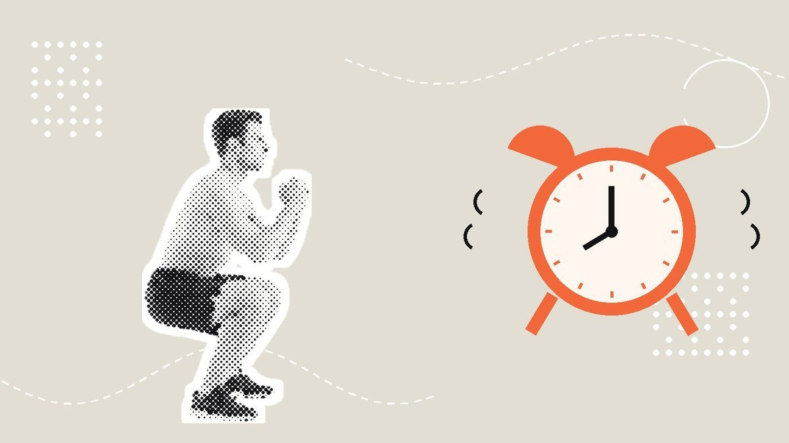
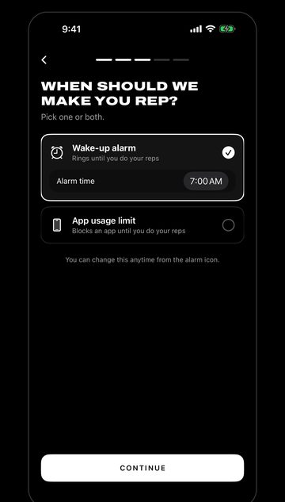

Your Alarm Isn't Too Quiet. Your Bed Is Too Easy.
How to get out of bed in the morning when the alarm keeps losing: why 6 a.m. is the worst time to decide, and a 60-second routine that decides for you.


TL;DR
- Your alarm wakes you up fine. The bed wins because getting up is a decision, and your judgment is at its worst right after waking.
- Post-waking grogginess (sleep inertia) usually fades within about 20 minutes, and lasts longer when you're short on sleep.
- If you sleep under 7 hours most nights, fix bedtime first. No trick beats being tired.
- Decide the night before: alarm across the room, first move chosen, one reason to be up.
- The 60-second routine: feet on the floor, stand to turn off the alarm, ten squats (or chair sit-to-stands), light on, leave the room.
- If you can't get out of bed most days and feel low, talk to a doctor. In the US, call or text 988.
6:10. The alarm goes off. You hear it fine. You heard it the first time, too.
Your thumb finds snooze without opening your eyes. 6:19. Snooze. 6:28. You pick up the phone "just to check the time" and surface at 6:51 with half an inbox and a stranger's kitchen renovation in your head.
So you buy a louder alarm. A brighter one. One that vibrates the whole mattress. You still don't get up.
The alarm was never the problem. If you want to know how to get out of bed in the morning, stop shopping for alarms. The alarm did its job: it woke you up. What it can't do is make the next decision for you, and that decision is the hard part. So make the bed the harder option.
Why getting out of bed in the morning is so hard
The first minutes after waking come with a real, measurable fog. Sleep scientists call it sleep inertia: slower reactions, worse decisions, a strong pull back toward sleep. A Sleep Research Society fact sheet says it usually fades within about 20 minutes, and lasts longer if you woke from deep sleep or didn't sleep enough.
Think about what that means. The moment you most need good judgment ("is getting up worth it?") is the moment your judgment is at its worst. And you're asking it to choose between a warm bed and a cold floor, or a warm bed and a phone full of new things.
Of course the bed wins. It's not a willpower problem, the same way endless scrolling isn't a willpower problem. It's a setup problem. You've arranged things so the easy choice and the bad choice are the same choice.
So the fix isn't to try harder at 6:10. It's to make sure there's nothing left to decide at 6:10.
Tired or unwilling? Figure out which one you are
Before you change your mornings, be honest about your nights. Two very different problems look the same from under the duvet.
- Tired: you get under seven hours most nights, you're groggy well into the morning, and you crash in the afternoon. That's a sleep problem. The American Academy of Sleep Medicine and Sleep Research Society recommend adults get 7 or more hours a night, regularly. Inertia also hits harder when you're short on sleep, so no morning trick fully beats a 1 a.m. bedtime.
- Unwilling: you slept enough, you're awake within a few minutes, and you still lie there. That's a setup problem, and the rest of this post is for you.
Most people are a bit of both. Start with the setup, because it's faster, and move your bedtime 15 minutes earlier while you're at it.
How to get out of bed in the morning: decide the night before
Your 10 p.m. self is clear-headed. Your 6:10 self is not. Let the one with working judgment make the calls. Before bed, set up three things:
- The alarm goes across the room. The oldest tip on every list, and still the best, because it turns "decide to get up" into "you're already up." If your phone is your alarm, charge it on a dresser or in the hallway. Bonus: it's no longer in your hand at 11:40 p.m. either (we covered that in how to stop doomscrolling).
- The first move is already chosen. Not "get up and be productive." One specific, physical thing you'll do the second your feet hit the floor. More on that below.
- There's one reason to be up. Clothes on the chair. The coffee set up. A podcast queued. Small, but it gives the bed some competition.
Notice what's missing: a better alarm sound. Volume wakes you up. Only setup gets you out.
A 60-second routine that gets you standing
Here's the whole thing. It's built to work while you're still groggy: no choices, no thinking, each step pulls you into the next.
| Step | What you do | Easier version |
|---|---|---|
| 1. Feet | The alarm goes off. Sit up and put both feet flat on the floor before touching anything. | Roll to your side first, then push up to sitting. |
| 2. Stand | Walk to the alarm and turn it off standing up. Don't sit back down on the bed. | Stand up slowly and hold the bed frame or a wall if you feel lightheaded. |
| 3. Move | Ten bodyweight squats, right there, next to the alarm. | Sit down onto the edge of a chair and stand back up, ten times. |
| 4. Light | Open the curtains or turn on the main light, then leave the bedroom. | Turn on one lamp if bright light feels like too much. |
Ten squats sounds like a workout. It isn't. It's about 30 seconds of movement that warms you up, gets your heart going and burns through the "maybe I'll lie down for a minute" phase. By the end you're standing, moving and out of reach of the bed. That's the whole goal.

Squat form, quickly: feet about shoulder-width apart, toes turned out a little, sit your hips back and down like you're aiming for a chair, keep your chest up and heels down, and only go as low as feels comfortable. Move slowly; you just woke up. If you have knee, hip or back pain, are pregnant, have a heart condition or haven't exercised in a long time, check with a doctor first and stick with the chair version.
If ten feels like a lot, do five. A tiny move you actually do beats a big one you skip. That's the idea behind exercise snacks, and it works at 6:10 as well as at 3 p.m.
Is hitting snooze bad?
Less than you've been told, at least for some people. A 2023 study in the Journal of Sleep Research surveyed 1,732 adults: 69% snoozed or set several alarms at least sometimes, for an average of 22 minutes a morning. The same team then brought 31 habitual snoozers into a sleep lab. Thirty minutes of snoozing cost them about six minutes of sleep and didn't hurt their thinking or mood right after waking; on some tests they did slightly better.
Caveats: that lab group was small, young and already used to snoozing, and the study only tested a 30-minute snooze. It doesn't show snoozing is good for everyone.
The bigger problem with snooze isn't biology. It's that each tap is another decision made in the fog, and it keeps your phone in your hand. If you snooze, decide the night before: set the real alarm for the time you'll actually get up, put it across the room, and let a single earlier alarm be the only "snooze" you get.
When it's more than a hard morning
Everyone has mornings when the bed wins. But if you can't get out of bed most days, feel low or empty for weeks, have lost interest in things you used to like, or sleep a lot and still wake exhausted, that's not a setup problem. Talk to a doctor. Persistent exhaustion can come from sleep disorders, other health issues or depression, and all of them are treatable.
If you're struggling or in crisis, you don't have to wait until morning. In the US you can call or text 988 or chat at 988lifeline.org, any time, for free. Outside the US, your local emergency number or a local crisis line can help.
An alarm that only stops when you're up
Rep Rot is built around step 3. You set an alarm in the app, and it doesn't stop until you do a set: squats, push-ups, sit-ups or a plank. Your iPhone's front camera counts the reps on the phone; nothing is recorded or uploaded. By the time it goes quiet, you're standing and moving, and the hardest part of the morning is already done.

It won't fix a 1 a.m. bedtime, and a determined sleeper can still crawl back under the covers. But it removes the one decision your groggy brain keeps getting wrong. Don't rot. Rep instead. Rep Rot is in testing; email help@reprotapp.com for early access.
Sources: Sleep Research Society, Waking up to the call: fighting grogginess after sleep (Hilditch & Vincent); Hilditch & McHill, Sleep inertia: current insights, Nature and Science of Sleep (2019); Stockholm University, You don't lose if you snooze (on Sundelin et al., Journal of Sleep Research, 2023); Watson et al., Recommended amount of sleep for a healthy adult, AASM and Sleep Research Society consensus statement (2015); SAMHSA, 988 Suicide & Crisis Lifeline.